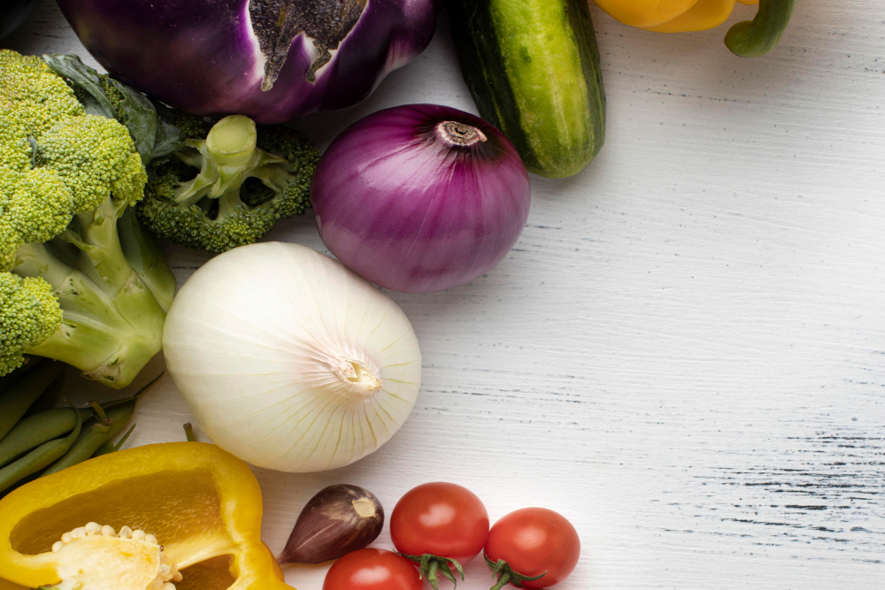
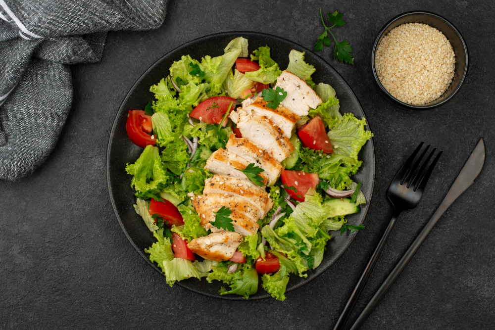

Dalam dunia nutrisi, buah-buahan dan sayuran sering dianggap sebagai pahlawan yang tidak terbantahkan. Namun, seringkali kita lupa untuk mengapresiasi betapa kaya nutrisi setiap gigitannya. Di balik warna-warni dan rasa segar yang mereka tawarkan, tersimpan ratusan jenis vitamin yang membantu menjaga kesehatan tubuh kita.

Jika Anda ingin mendapatkan dosis vitamin yang seimbang, cobalah untuk menyajikan beragam buah-buahan dan sayuran setiap harinya. Dengan begitu, Anda tidak hanya menikmati kelezatan mereka, tetapi juga memberi tubuh Anda vitamin yang diperlukan untuk tetap sehat dan bertenaga. Jadi, segera tambahkan kekayaan vitamin dalam setiap gigitan Anda, dan rasakan manfaatnya bagi kesehatan Anda secara keseluruhan.
Salad sayur bukan lagi sekadar campuran hijau yang membosankan di pinggir piring. Lebih dari itu, salad sayur adalah perpaduan kreatif yang menghadirkan segarnya alam dalam setiap gigitannya. Mari kita menjelajahi dunia salad sayur yang kaya akan rasa dan manfaat bagi kesehatan.

Pertama-tama, mari kita bicara tentang variasi. Salad sayur bisa diisi dengan berbagai macam bahan, mulai dari daun selada, bayam, hingga kale. Tambahkan potongan sayuran segar seperti tomat merah, mentimun, dan wortel untuk memberikan kelezatan dan kaya akan serat. Jangan lupakan tambahan protein seperti potongan ayam panggang atau kacang-kacangan untuk membuatnya lebih mengenyangkan.
Keistimewaan salad sayur tidak hanya terletak pada rasa segarnya, tetapi juga pada manfaat kesehatannya. Dengan memakan salad sayur secara teratur, Anda dapat meningkatkan asupan serat, vitamin, dan mineral yang penting untuk kesehatan tubuh. Selain itu, salad sayur juga rendah kalori, menjadikannya pilihan ideal bagi yang ingin menjaga berat badan atau mengontrol kadar gula darah.
Tidak hanya itu, salad sayur juga memungkinkan kreativitas dalam penyajian. Anda bisa menambahkan berbagai macam saus atau dressing, mulai dari yang berbasis minyak zaitun hingga yogurt rendah lemak, sesuai dengan selera dan preferensi nutrisi Anda.
Jadi, mari kita nikmati kelezatan dan kesehatan dalam setiap suapan salad sayur. Jadikan salad sayur sebagai bagian tak terpisahkan dari pola makan sehat Anda, dan rasakan manfaatnya bagi tubuh dan pikiran Anda.
Erika Wijaya
Artikel yang sangat informatif! Saya jadi semakin termotivasi untuk meningkatkan konsumsi sayur dan buah setiap hari. Terima kasih atas pembahasannya!
Reply
Rudi Santoso
Saya baru menyadari betapa pentingnya salad dalam pola makan sehari-hari setelah membaca artikel ini. Akan segera mencoba variasi salad yang disarankan. Terima kasih atas tipsnya!
Reply
Anita Susanto
Saya suka bagaimana artikel ini memberikan pandangan baru tentang sayur dan buah, terutama dalam bentuk salad. Informasinya lengkap dan mudah dipahami. Akan saya bagikan ke teman-teman saya!
Reply
Ahmad Ibrahim
Salad sayur memang selalu menjadi favorit saya, tapi setelah membaca artikel ini, saya jadi tahu lebih banyak manfaatnya bagi kesehatan. Terima kasih sudah berbagi informasi yang berharga!
Reply
Siti Rahayu
Saya baru saja mencoba salah satu resep salad dari artikel ini dan rasanya luar biasa! Ternyata membuat salad sendiri sangat mudah dan menyenangkan. Akan mencoba resep lainnya juga nanti!
Reply
Budi Prasetyo
Saya selalu menganggap salad sayur itu membosankan, tapi setelah membaca artikel ini, saya jadi berpikir ulang. Terima kasih telah menginspirasi saya untuk mencoba lebih banyak variasi salad.
Reply